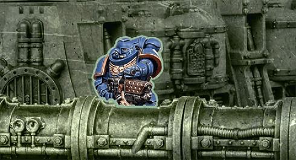
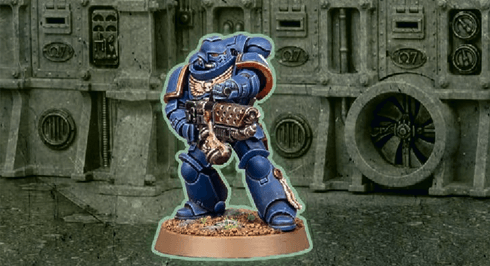
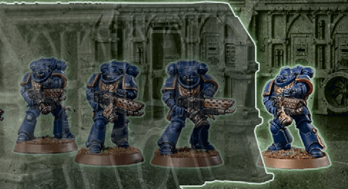
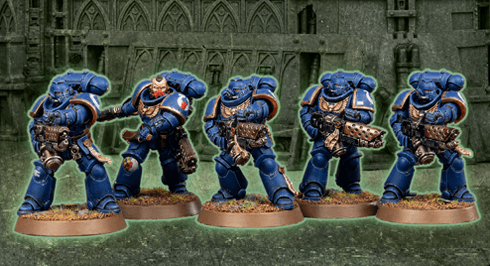

Line of sight is used to determine between models. For an observing model to have line of sight, it must be possible to draw an imaginary straight line, 1 mm wide, from any part of that model to any part of the model being observed. This line is the line of sight. While doing so, other models in the observing model’s unit and in the observed model’s unit are ignored.
Other models and units can be either visible or fully visible to the observing model, as shown below. Note that terrain applies additional rules to ().
Model Visible
If any part of another model is visible to the observing model, that model is visible.
Model Fully Visible
If every part of another model that is facing the observing model is visible to the observing model (so the only thing blocking to any part of that other model is that model itself), that model is fully visible.
Unit Visible
If one or more models in a unit are visible to the observing model, that unit is visible.
Unit Fully Visible
If every model in a unit is fully visible to the observing model, that unit is fully visible. When determining this, the observing model can see through other models in that unit.
{kind=link}

{kind=link}

{kind=link}

{kind=link}

When a rule references a visible unit but does not state which units that unit must be visible to, it must be visible to the unit that is using that rule.
Example: target a friendly unit with a stratagem that says ‘select one visible enemy unit’. That enemy unit must be visible to the friendly unit targeted with the stratagem.